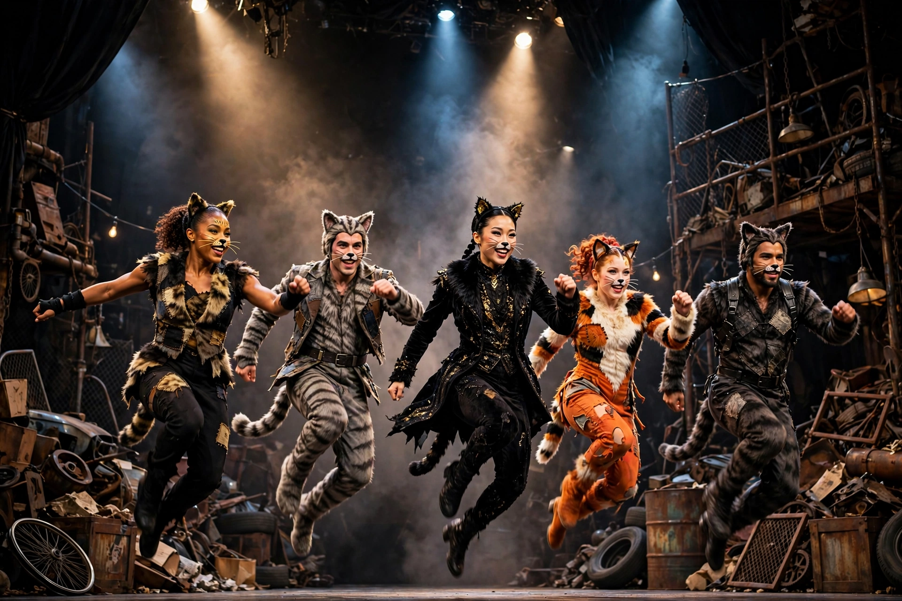

CatsCats is a sung-through musical composed by Andrew Lloyd Webber, based on the 1939 poetry collection Old Possum's Book of Practical Cats by T. S. Eliot. It tells the story of a tribe of cats called the Jellicles and the night they make the "Jellicle choice" — deciding which cat will ascend to the Heaviside Layer and return to a new life.
Directed by Trevor Nunn and choreographed by Gillian Lynne, Cats premiered in London's West End in 1981 and on Broadway in 1982. The London production ran 21 years (8,949 performances) and Broadway's 18 years (7,485 performances), both records in their day. Its best-known song, "Memory," sung by the faded Grizabella, became a standard recorded by hundreds of artists.
Over one night, cats including Munkustrap, Rum Tum Tugger, Bustopher Jones, Gus the Theatre Cat, Skimbleshanks and the villainous Macavity introduce themselves, before Old Deuteronomy chooses the outcast Grizabella to be reborn.
A 2019 film adaptation directed by Tom Hooper was a notorious critical and commercial failure, though the stage show remains a global touring staple translated into more than 20 languages.